Nettoyage & Traitement par Drone
Jour 2 — Chimie des produits, MANEX & préparation de mission
Toitures · Façades · Panneaux solaires — 3 joursRappel du Jour 1 et programme du jour
Hier
- Pulvérisation = catégorie Spécifique, scénario STS-01
- Drone C5 captif : zone contrôlée = accroche + 5 m
- Le Spray L et ses caractéristiques
- Biocides TP2 / TP10, Certibiocide, pas de phyto
- Sécurité, EPI, premiers gestes
Aujourd'hui
- Module 1 — Chimie : principes actifs, FDS, environnement
- Module 2 — Techniques par surface et réglages du Spray L
- Module 3 — Adapter le MANEX et le plan d'urgence
- Module 4 — Préparer une mission (étude de cas)
La chimie des produits
Les principes actifs des produits de traitement et de nettoyage, leurs dangers, la lecture de l'étiquette et de la FDS, et la protection de l'environnement.
Les principes actifs : vue d'ensemble
| Famille | Exemples | Rôle | Usage type | Pictogrammes usuels |
|---|---|---|---|---|
| Ammoniums quaternaires | Chlorure de benzalkonium (ADBAC), chlorure de didécyldiméthylammonium (DDAC) | Algicide, bactéricide, fongicide | Traitement de toitures et façades (biocide TP2 / TP10) | 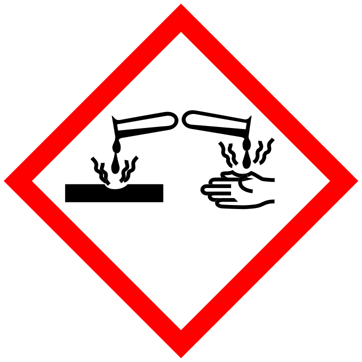 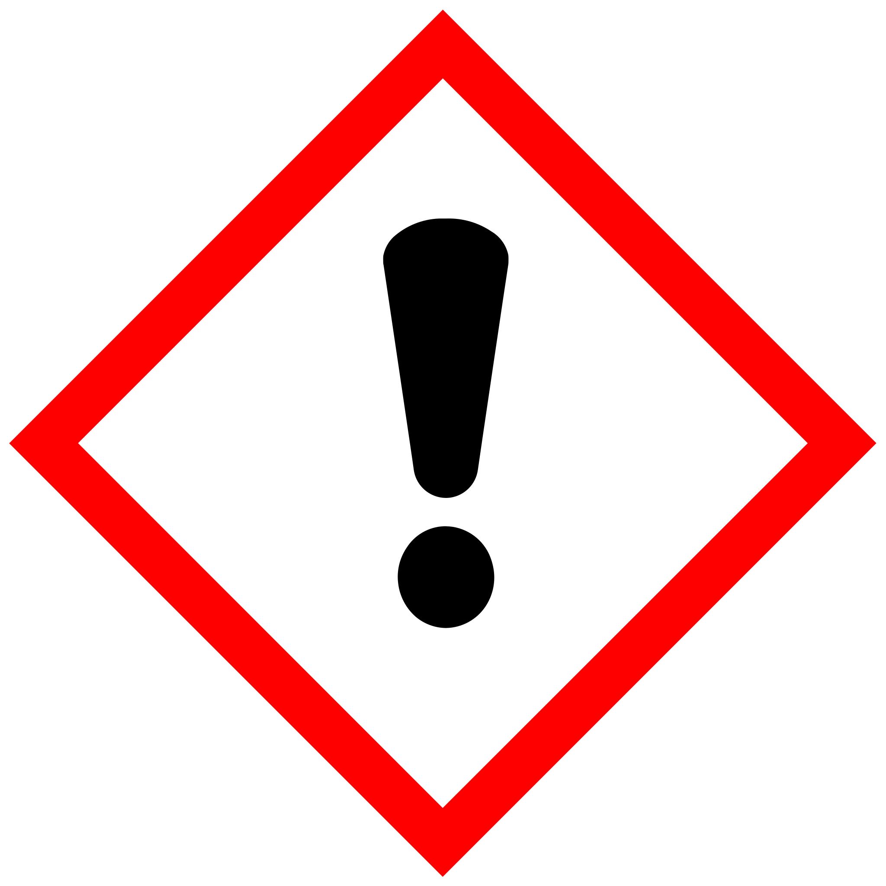 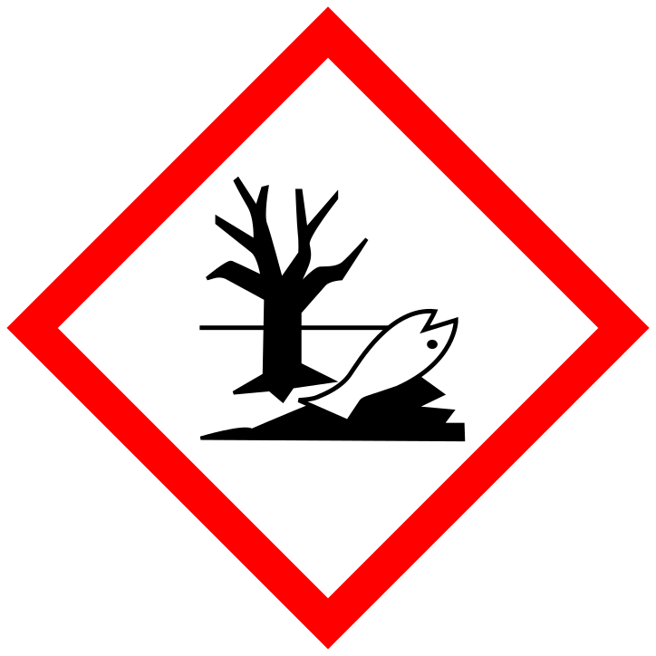 |
| Agents alcalins | Hydroxyde de sodium (soude), hydroxyde de potassium (potasse), métasilicate de sodium | Dégraissant : attaque les graisses et salissures organiques | Dégraissage de façades, bardages | (soude) |
| Tensioactifs | Anioniques, non ioniques | Mouillant, émulsionnant : décollent et mettent la salissure en suspension | Base des détergents et dégraissants | Selon la FDS |
| Oxydants chlorés | Hypochlorite de sodium (eau de Javel) | Désinfectant, blanchissant | Taches noires, salissures biologiques |
INRS — fiches toxicologiques FT 253 (chlorure de benzalkonium), FT 20 (hydroxyde de sodium), FT 157 (hypochlorite de sodium) · Règlement (UE) 528/2012, art. 69
Focus : l'ammonium quaternaire
Ce que c'est
- Tensioactif cationique aux propriétés bactéricides, fongicides et algicides
- Principe actif majeur des produits anti-algues / anti-lichens de toiture
- Deux molécules courantes : chlorure de benzalkonium (ADBAC) et DDAC
- Le DDAC est approuvé en TP1 et TP2 depuis le 1er février 2024, avec une attention particulière aux utilisateurs professionnels
Ses dangers (chlorure de benzalkonium)
- H314 Provoque des brûlures de la peau et des lésions oculaires graves
- H302 / H312 Nocif en cas d'ingestion / par contact cutané
- H400 Très toxique pour les organismes aquatiques
- Risque d'asthme professionnel lors de pulvérisations
INRS, fiche toxicologique FT 253 · Règlement d'exécution (UE) 2022/1991 (approbation du DDAC)
Les principes actifs des dégraissants
Alcalins
- Soude, potasse, métasilicate
- pH élevé : attaquent graisses et matières organiques
- Soude : H314 corrosif
- Attaquent aussi certains métaux et supports fragiles
Tensioactifs
- Anioniques, non ioniques
- Abaissent la tension de surface : l'eau mouille mieux le support
- Émulsionnent les graisses pour le rinçage
- Classification : voir rubrique 2 de la FDS
Javel
- Oxydant désinfectant et blanchissant
- H314 H400 H290
- EUH031 : au contact d'un acide, dégage un gaz toxique
- Corrosif pour les métaux
INRS — FT 20 (hydroxyde de sodium), FT 157 (hypochlorite de sodium) · Règlement (UE) 2020/878 (format de la FDS)
Comment agit un tensioactif ?
Schéma de principe — la molécule tensioactive, le mouillage du support et la mise en suspension des graisses
Le pH : acide, neutre, alcalin
Échelle de pH de 0 à 14 — plus on s'éloigne de 7, plus le produit attaque la peau, les yeux, le support et le matériel
Mélanges dangereux : ne jamais mélanger
 Règle de sécurité : un seul produit à la fois, et rinçage de la cuve et de tout le circuit à l'eau claire entre deux produits. Incompatibilités : rubrique 10 de la FDS.
Règle de sécurité : un seul produit à la fois, et rinçage de la cuve et de tout le circuit à l'eau claire entre deux produits. Incompatibilités : rubrique 10 de la FDS.INRS, fiche toxicologique FT 157 — Hypochlorite de sodium
Les 9 pictogrammes de danger
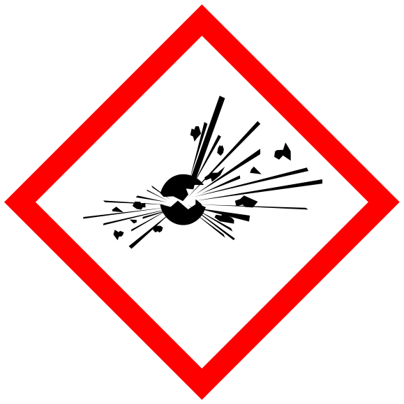
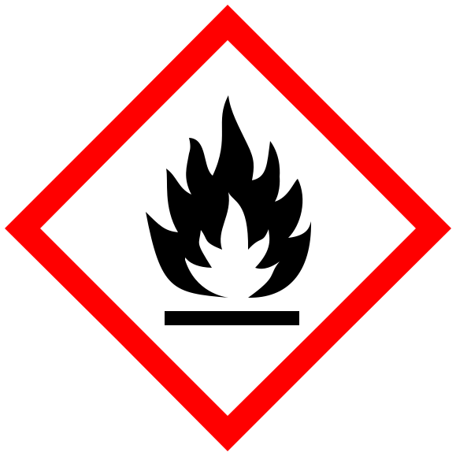
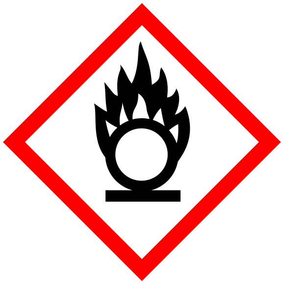
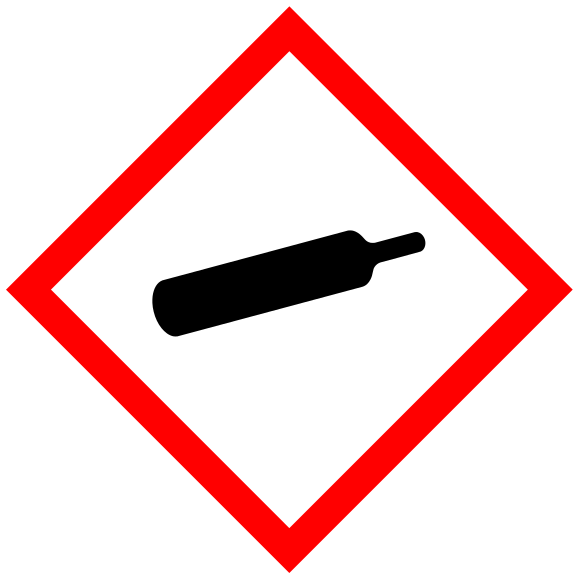
soude, Javel, quats purs
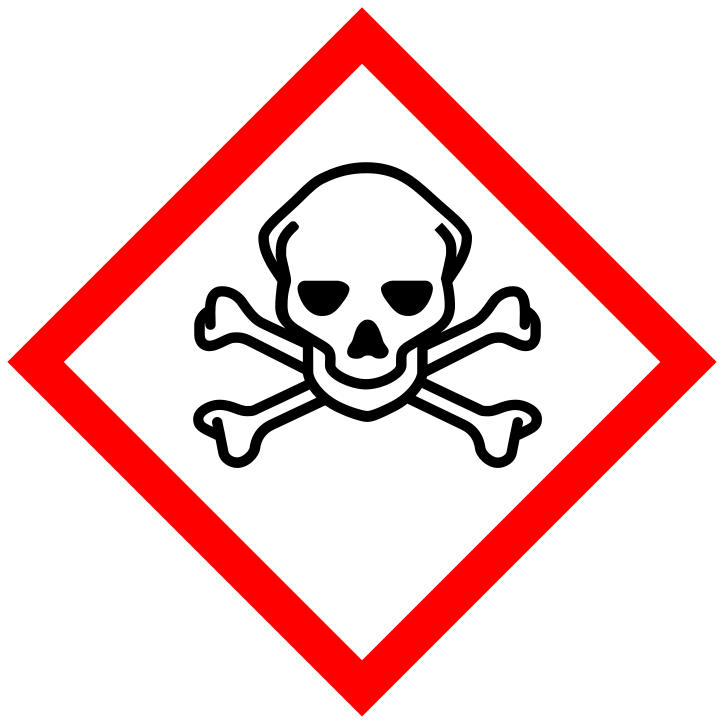
quats
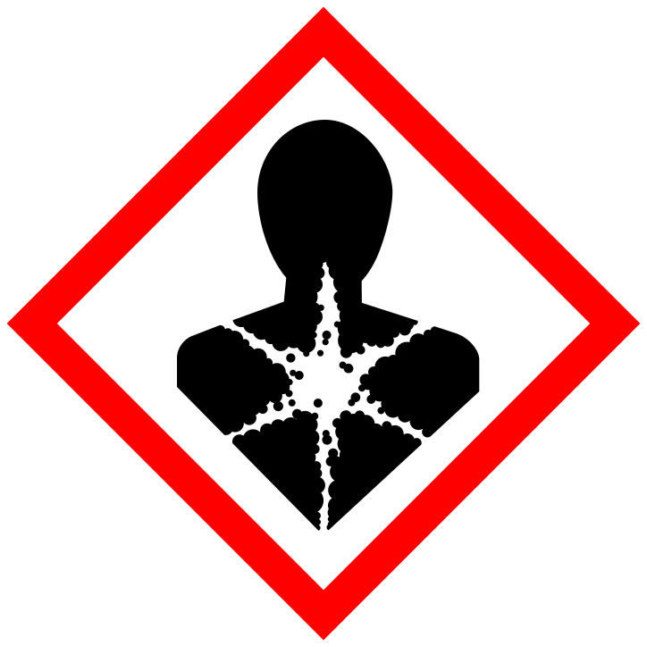
quats, Javel
Pictogrammes officiels du règlement (CE) 1272/2008 (CLP), annexe V · INRS ED 4405 — encadrés en rouge : les plus fréquents sur nos produits
Lire une fiche de données de sécurité (FDS)
16 rubriques obligatoires. Pour un chantier drone, huit sont à lire systématiquement :
2 · Dangers
Pictogrammes, mentions H et P
 4 · Premiers secours
4 · Premiers secours
Gestes en cas d'exposition
6 · Déversement
Conduite à tenir en cas de fuite
 8 · Protection
8 · Protection
EPI : gants, lunettes, masque
pH 9 · Propriétés
pH, aspect
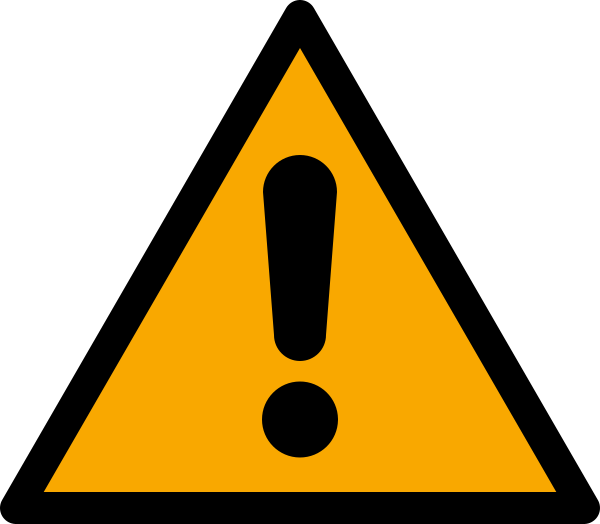
10 · RéactivitéIncompatibilités, mélanges interdits
12 · Écologie
Toxicité aquatique
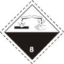
14 · TransportClassement « marchandise dangereuse »
Les autres rubriques : 1 identification · 3 composition · 5 incendie · 7 manipulation et stockage · 11 toxicologie · 13 élimination · 15 réglementation · 16 autres informations — Règlement REACH, annexe II modifiée par le règlement (UE) 2020/878 · INRS ED 6483
Protéger l'eau et l'environnement
Le cadre
- Laisser s'écouler dans les eaux des substances nuisibles est un délit : jusqu'à 2 ans d'emprisonnement et 75 000 € d'amende
- Rejet d'eaux non domestiques au réseau public : autorisation de la collectivité
- Biocides : respecter les mesures de l'étiquette sur les risques pour l'eau
- Le producteur du déchet est responsable de son élimination
Sur le chantier
- Obturer ou dériver les descentes de gouttières pendant le traitement
- Protéger avaloirs, regards, bassins, potagers
- Ne pas traiter avant la pluie ni par vent fort
- Appliquer la dose de l'étiquette, pas plus
- Fonds de cuve et emballages souillés : filière déchets dangereux (rubrique 13 de la FDS)
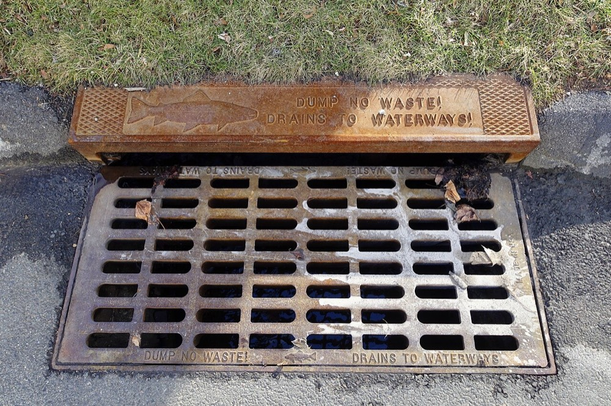
Avaloir d'eaux pluviales : « ne rien déverser, rejoint les cours d'eau »
Code de l'environnement, art. L216-6 et L541-2 · Code de la santé publique, art. L1331-10 · Règlement (UE) 528/2012, art. 17.5 et 69
Le trajet du produit jusqu'à la rivière
Schéma de principe — chemin typique d'une pollution par ruissellement après un traitement de toiture
Question
Dans quelle rubrique de la FDS trouvez-vous les gants et lunettes à porter ?
Techniques par surface
Toitures, façades, panneaux solaires : diagnostic, précautions propres à chaque support et réglages du Spray L.
Toitures : anti-algues et anti-lichens
Diagnostic avant devis
- Nature du support : tuile terre cuite, béton, ardoise, fibres-ciment, bac acier
- État : tuiles cassées, fissures, faîtage, gouttières
- Type de salissure : algues, lichens, mousses
- Abords : véhicules, jardin, bassin, voisins, lignes électriques
Application
- Produit choisi selon le support et l'étiquette
- Respect de la dose et du temps d'action indiqués
- Rinçage uniquement si l'étiquette le prévoit
- Gouttières obturées ou dérivées pendant l'application
- Photos avant au plus près (constat d'état)
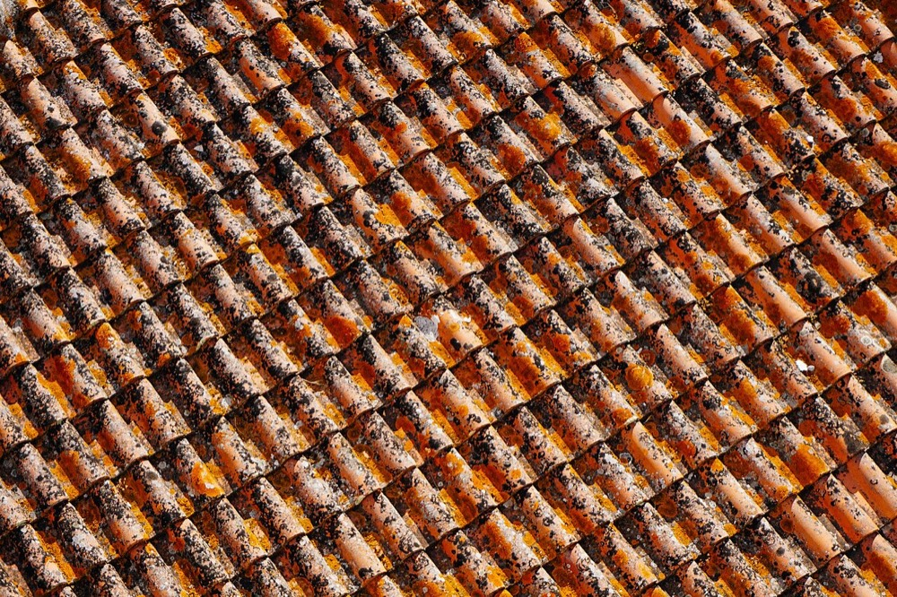
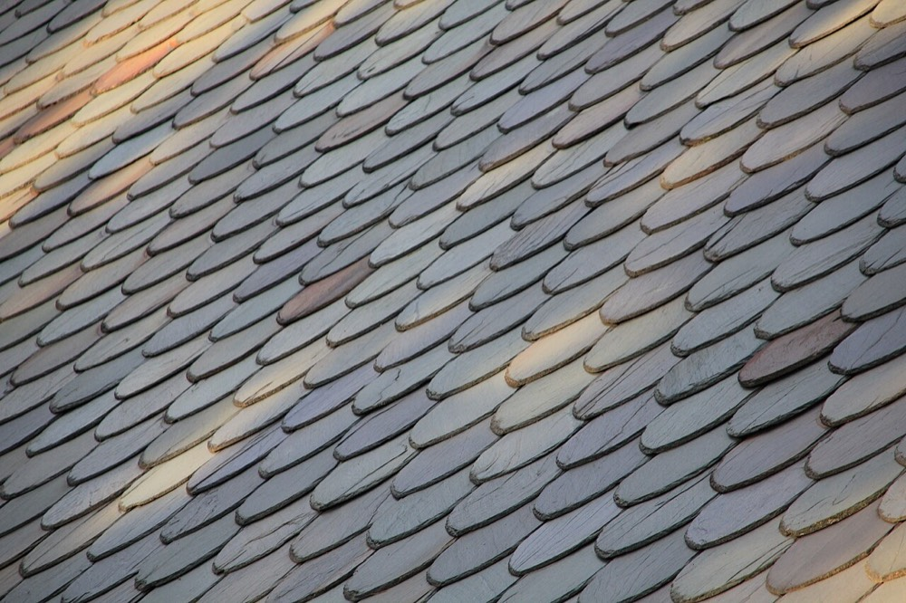
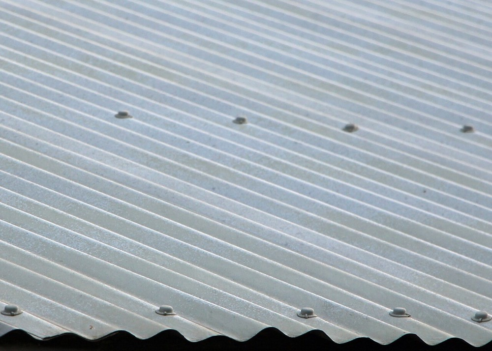
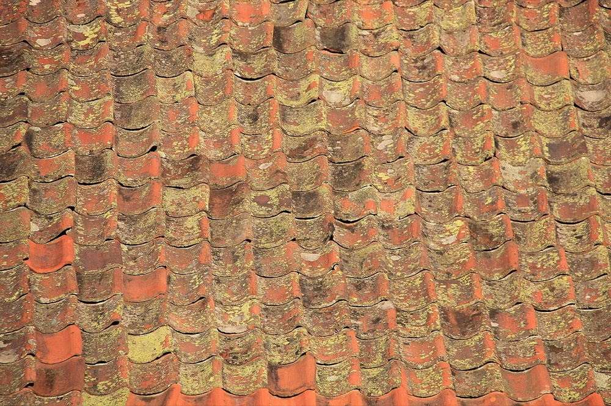
Façades : nettoyer et traiter
Avant
- Identifier le support : enduit, pierre, brique, bardage, béton, verre
- Test sur une zone discrète : tenue de l'enduit, décoloration
- Fermer et protéger menuiseries, vitrages, aérations
- Prévenir les occupants : fenêtres fermées
Pendant
- Rampe verticale du Spray L
- Application par bandes régulières, sans oubli ni surcharge
- Dégraissant : respecter le temps d'action, puis rinçage si prévu
- Surveiller le ruissellement au pied de façade
- Distance de sécurité constante avec le mur
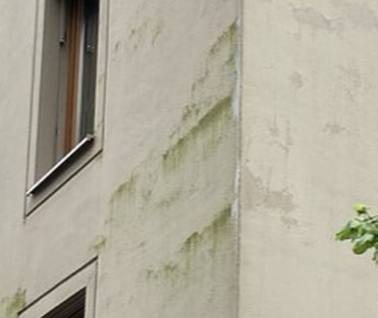
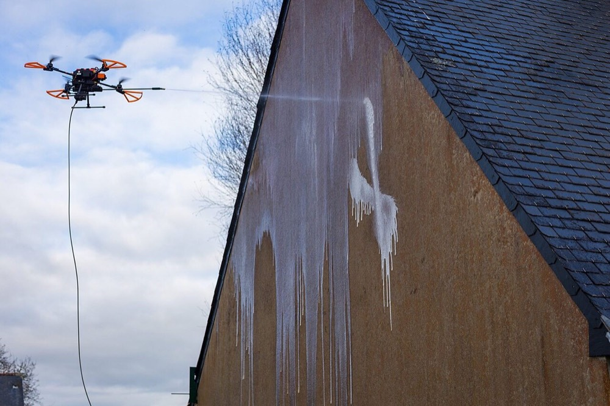
Panneaux solaires et verrières
La règle : la notice du fabricant
- Produits, pression et fréquence autorisés par le fabricant : sinon, risque de perte de garantie
- Pas de produit agressif sur le verre et ses traitements de surface
- Intervenir de préférence quand les panneaux sont froids (matin, temps couvert)
- Ne jamais marcher ni poser le drone sur les modules
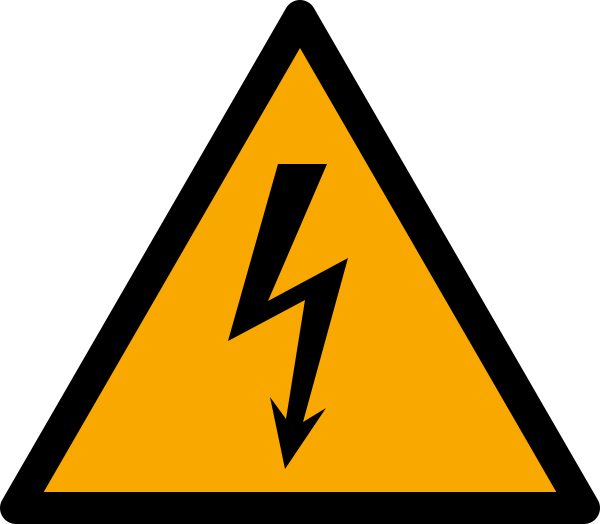
Risque électrique- Une installation photovoltaïque reste sous tension dès qu'elle est éclairée
- Ne pas pulvériser sur les boîtiers, connecteurs et onduleurs
- Repérer les câbles et le coffret avec l'exploitant du site
- Vérifier l'état des modules avant (casse, micro-fissures visibles)
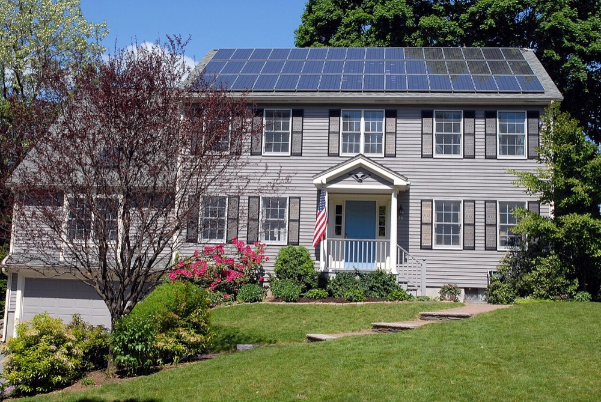
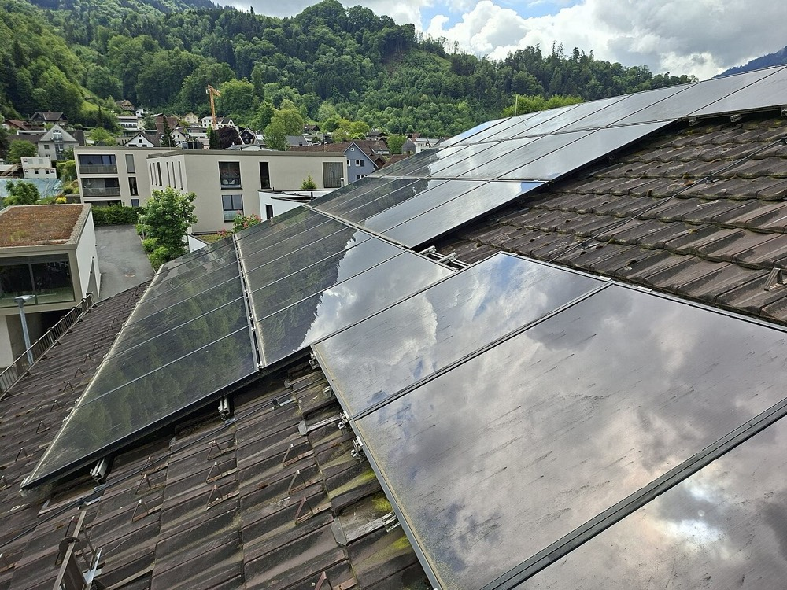
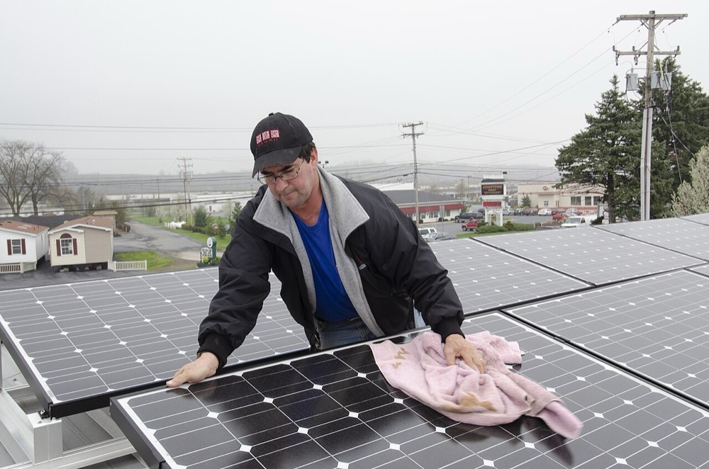
Adapter le Spray L au chantier
| Élément | Options (catalogue Aeotic) | Choix selon le chantier |
|---|---|---|
| Rampe | 4 jets horizontale, verticale, tangentielle ; télescopique mono ou tri-jets | Horizontale : toiture · Verticale : façade · Tangentielle : surfaces inclinées |
| Buses | Buse calibre 2, 110°, anti-dérive | Anti-dérive dès qu'il y a des abords à protéger |
| Alimentation produit | Pompe basse pression 15 bar (démarrage à distance) ; tuyau 50 m produit chimique avec lien captif | Mode captif : la longueur de l'accroche fixe la zone contrôlée |
| Haute pression | Tuyau HP 30 m, 180 bar | Uniquement si le support et l'étiquette le permettent |
| Débit / pression | Réglables sur la pompe | Selon la dose de l'étiquette et la vitesse d'avancement |
Catalogue produits et pièces aeotic.com · Valeurs de débit et de capacité : manuel constructeur remis avec la machine
Orienter la rampe selon la surface
Schéma de principe — rampes horizontale et verticale du catalogue Aeotic, alimentées par le tuyau captif
Maîtriser la dérive
Schéma de principe — les gouttes fines sont emportées par le vent hors de la cible
La dérive augmente avec :
- la force du vent
- la hauteur entre la buse et la surface
- la finesse des gouttes (pression élevée, buse fine)
Pour la limiter :
- Buses anti-dérive (catalogue Aeotic)
- Voler au plus près de la surface
- Respecter les limites de vent (constructeur, étiquette)
- Protéger ou faire déplacer véhicules et mobilier
MANEX & plan d'urgence
Adapter le manuel d'exploitation STS-01 et le plan d'intervention d'urgence à la pulvérisation de produits en mode captif.
Le MANEX STS : contenu minimal
1 · Organisation
- Déclaration de conformité et signature du responsable
- Organisation de l'exploitant
- Personnel : rôles, formation, maintien de compétences
2 · Principes d'exploitation
- Nature des activités et risques associés
- Environnement : population, obstacles, espace aérien, météo
- Volume d'exploitation, zones tampons
- Moyens techniques et leurs limites
- Instructions d'entretien
3 · Procédures
- Normales : préparation, check-lists, zone contrôlée au sol
- D'intervention : tiers dans la zone, conditions dégradées
- D'urgence et plan d'intervention d'urgence
- Sûreté, données personnelles, environnement
- Comptes rendus d'événements, registres
Règlement (UE) 2019/947, appendice 5 (introduit par le règlement 2020/639) · Guide DSAC « Catégorie Spécifique », §16.3 · AMC1 / GM1 UAS.SPEC.030(3)(e)
Adapter le MANEX à notre activité
| Section du MANEX | Ce qu'il faut y ajouter pour notre activité |
|---|---|
| Nature des activités et risques | Traitement et nettoyage de toitures, façades, panneaux · risques chimiques, dérive, ruissellement |
| Moyens techniques | Spray L C5, rampes et buses, pompe, tuyau et lien captif (longueur, résistance, point de fixation) |
| Zone contrôlée au sol | Rayon = accroche + 5 m · balisage · accord des occupants · coordination mairie si voie publique |
| Conditions environnementales | Limites de vent et de pluie (constructeur + étiquette du produit) · pas de traitement avant la pluie |
| Procédures normales | Préparation et dilution des produits, EPI, protection des abords et gouttières, rinçage du circuit |
| Personnel | CATS + attestation STS-01 · Certibiocide si produit TP2 professionnel |
| Environnement & déchets | Gestion des eaux de ruissellement, fonds de cuve et emballages |
| Annexes | FDS et fiches « produit » · check-lists · plan d'urgence · registre d'entretien |
Adapter le plan d'intervention d'urgence
| Situation | Actions réflexes | Qui alerter |
|---|---|---|
| Chute du drone | Couper la pompe · sécuriser la zone · ne pas toucher les batteries endommagées · récupérer le produit | Secours si blessé (112) · client |
| Rupture du tuyau ou du lien captif | Arrêt immédiat de la pompe · atterrissage d'urgence · baliser la zone de fuite | Équipe au sol |
| Déversement de produit | Absorbant · protéger avaloirs et regards · suivre la rubrique 6 de la FDS | Client · mairie si voie publique |
| Exposition d'une personne | Rinçage abondant · rubrique 4 de la FDS · garder l'étiquette | 15 / 112 · centre antipoison |
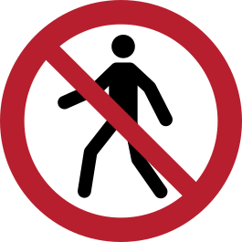 Tiers dans la zone contrôlée | Arrêt de la pulvérisation · stationnaire ou atterrissage · reprise après évacuation | Observateur · responsable du chantier |
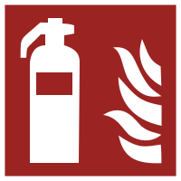 Feu de batterie | Éloigner les personnes · ne pas inhaler les fumées · laisser brûler en sécurité ou extincteur adapté | 18 / 112 |
Règlement (UE) 2019/947, UAS.STS-01.030 (plan d'intervention d'urgence) et appendice 5, point 6) e) · Guide DSAC §16.4 (compte rendu d'événement, formulaire CRESUS)
TP — Rédiger sa fiche réflexe d'urgence
Consigne (30 min, par binôme)
- À partir de la FDS travaillée ce matin, rédiger la fiche réflexe d'un chantier de toiture
- Une page A4 maximum, lisible sur le terrain
- Choisir 3 situations du tableau précédent et détailler les actions
La fiche doit contenir 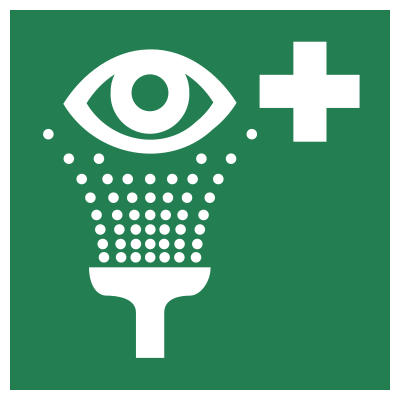
- Numéros d'urgence (112, 15, 18, centre antipoison)
- Adresse exacte du chantier et point d'accès des secours
- Produits présents, pictogrammes, premiers secours
- Emplacement du kit absorbant, de l'eau et du rince-œil
- Rôle de chaque membre de l'équipe
Préparation de mission
De la visite technique au jour J : démarches, check-lists, documents et étude de cas complète.
La visite technique
Le bâtiment
- Surface réelle à traiter, pente, hauteur
- Support et état (photos d'état initial)
- Amiante possible ? Repérage avant travaux
- Gouttières, descentes, regards, avaloirs
Le site et l'espace aérien
- Point de fixation du captif et rayon accroche + 5 m : est-il tenable ?
- Obstacles : lignes électriques, arbres, antennes
- Voie publique, voisins, véhicules, passants
- Zones géographiques UAS (Géoportail) · zone peuplée ?
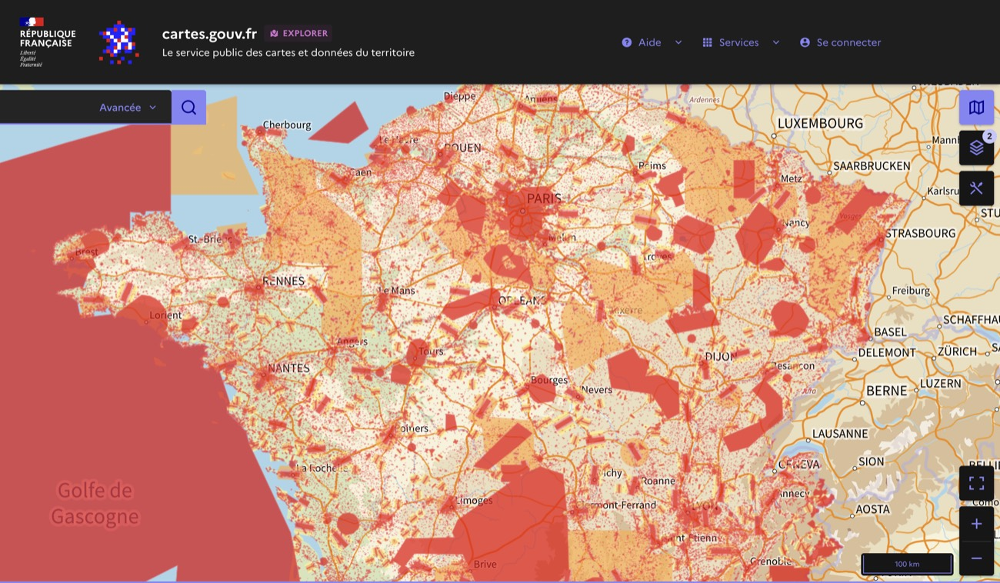
Check-lists de préparation
J-10 ouvrables et avant
- Devis signé, accord écrit du client
- Déclaration préfecture si zone peuplée
- Demande d'arrêté mairie si voie publique
- Produits commandés, FDS reçues
- Information des voisins
J-1
- Météo : vent, pluie annoncée
- Zones géographiques et NOTAM
- Batteries chargées
- Drone, tuyau, lien captif, pompe inspectés
- EPI, kit absorbant, rince-œil, balisage
Jour J
- Briefing équipe et personnes présentes
- Balisage de la zone contrôlée
- Gouttières et abords protégés
- Test du circuit à l'eau claire
- Identification à distance active
- Photos avant
Les documents à avoir sur le chantier
Télépilote & exploitant
- CATS et attestation pratique STS-01
- Preuve de la déclaration STS-01
- N° d'exploitant affiché sur le drone
- MANEX (version à jour)
- Certibiocide si requis
Chantier
- Récépissé de déclaration préfecture
- Arrêté de la mairie le cas échéant
- Devis signé, accord du client
- Attestation d'assurance
Produits & sécurité
- FDS de chaque produit
- Fiche réflexe d'urgence
- Fiche de chantier à remplir : heure, météo, produit, quantité, incidents
Étude de cas : préparer la mission
Le chantier
- Maison individuelle en agglomération
- Toiture en tuiles terre cuite, 2 pans, faîtage à 8 m
- Lichens et algues, gouttières en zinc
- Rue devant la maison, voiture du voisin garée le long du pignon
- Petit potager côté jardin
À produire (45 min, par groupe)
- Démarches et délais
- Point de fixation, longueur d'accroche et rayon de la zone contrôlée
- Choix du produit : TP, Certibiocide, EPI
- Protection des abords et des eaux
- Check-list du jour J et fiche réflexe
Étude de cas : correction
Réglementaire
- STS-01 déclaré · Spray L C5 en captif
- Zone peuplée → déclaration préfecture 10 jours ouvrables avant
- La zone contrôlée déborde sur la rue → arrêté de la mairie (circulation / stationnement)
- Accroche de 20 m → zone contrôlée de 25 m de rayon
- Voisin informé, voiture déplacée ou bâchée
Produit & environnement
- Anti-algues / anti-lichens biocide, application par drone compatible avec l'étiquette
- TP2 professionnel → Certibiocide « désinfectants »
- EPI selon la rubrique 8 de la FDS
- Descentes de gouttières obturées, potager bâché
- Buse anti-dérive, vent faible, pas de pluie annoncée
Étude de cas : le plan de chantier
Vue de dessus, à l'échelle — exemple de correction pour la maison de l'étude de cas
Synthèse du Jour 2
À retenir
- Ammonium quaternaire : algicide, corrosif pur, très toxique pour l'eau
- Dégraissants : alcalins, tensioactifs, hypochlorite — jamais de mélange
- La FDS guide les EPI, l'urgence, l'environnement, le transport
- Chaque support a ses précautions : amiante, menuiseries, garantie des panneaux
- MANEX et plan d'urgence adaptés à la pulvérisation en captif
- Zone peuplée : 10 jours ouvrables de préavis
Demain — Jour 3
- Mise en pratique sur le terrain
- Chiffrage et devis
- Photos avant / après
- Assurance drone spécifique
- Entretien et maintenance
Crédits des illustrations
- Dump No Waste! Drains to Waterways! - Arlington, MA - DSC05450 — Daderot, CC0, Wikimedia Commons
- Terracotta clay tile (Unsplash) — Dan Gold danielcgold, CC0, Wikimedia Commons
- Roof slates Eiktunet — Øyvind Holmstad, CC0, Wikimedia Commons
- Corrugated fibre cement roofing — HelenOnline, CC BY-SA 3.0, Wikimedia Commons
- Roof tiles with lichen — Øyvind Holmstad, CC0, Wikimedia Commons
- Algenbewuchs an minimal vorstehenden Stellen der WDVS-Westfass… (recadrée) — Kai Kemmann, CC BY-SA 4.0, Wikimedia Commons
- Drone de la société SI-DRONE en cours de demoussage-nettoyage-… — SI-DRONE prestation, CC BY-SA 4.0, Wikimedia Commons
- Solar panels on house roof — Gray Watson User:E090, CC BY-SA 3.0, Wikimedia Commons
- Dornbirn-NEXT Power 145 aSi-dirty-pollen-01ASD — Asurnipal, CC BY-SA 4.0, Wikimedia Commons
- Cleaning solar panels, Palmyra, Pennsylvania — U.S. Department of Agriculture, Public domain, Wikimedia Commons
- Pictogrammes de danger SGH/CLP, signaux ISO 7010, étiquette de transport ADR — Wikimedia Commons, domaine public
- Carte des restrictions UAS — cartes.gouv.fr (IGN)
- Schémas et icônes — Dronexperts
Fin du Jour 2
Demain : pratique terrain, devis, assurance et entretien du matériel.